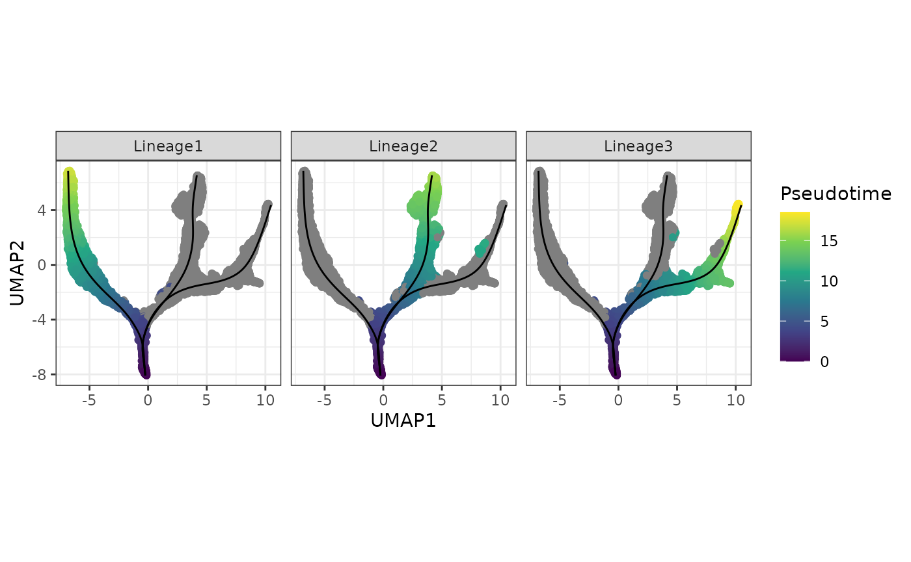

Advanced Phenotyping in Single Cell Data Analysis
Yingxin Lin1 Hani Jieun Kim2 Carissa Chen3
Source:vignettes/advanced_phenotyping.Rmd
advanced_phenotyping.RmdOverview
Pre-requisites
List any workshop prerequisites, for example:
- Basic knowledge of R syntax
- Familiarity with the GenomicRanges class
- Familiarity with xyz vignette (provide link)
List relevant background reading for the workshop, including any theoretical background you expect students to have.
- List any textbooks, papers, or other reading that students should be familiar with. Include direct links where possible.
Time outline
Structure of the 2-hour workshop:
| Activity | Time |
|---|---|
| Packages | 15m |
| Package Development | 15m |
| Contributing to Bioconductor | 5m |
| Best Practices | 10m |
Workshop goals and objectives
List “big picture” student-centered workshop goals and learning objectives. Learning goals and objectives are related, but not the same thing. These goals and objectives will help some people to decide whether to attend the conference for training purposes, so please make these as precise and accurate as possible.
Learning goals are high-level descriptions of what participants will learn and be able to do after the workshop is over. Learning objectives, on the other hand, describe in very specific and measurable terms specific skills or knowledge attained. The Bloom’s Taxonomy may be a useful framework for defining and describing your goals and objectives, although there are others.
1. Introduction
General introduction to the advanced phenotyping course (e.g., summary of the introduction PPT, Carissa to fill?).
2. Defining cellular identity
2.2 Loading preprocessed data
About the data… from this paper. We provide the preprocessed version in this workshop. The original data can be access from GEO with the accession number XXXXXX.
# code to load data
# we can also run some of the processing steps here (e.g., log transform, filter lowly expressed genes etc.)
sce <- readRDS("data/sce_DentateGyrus_hippocampus.rds")
sce
#> class: SingleCellExperiment
#> dim: 27998 18213
#> metadata(0):
#> assays(3): counts spliced unspliced
#> rownames(27998): Xkr4 Gm37381 ... Gm20837 Erdr1
#> rowData names(6): Accession Chromosome ... Start Strand
#> colnames(18213): 10X83_2:AAACGGGGTCTCTTTAx 10X83_2:AACCATGGTTCAACCAx
#> ... 10X84_3:TTTGTCAAGCGTCAAGx 10X84_3:TTTCCTCGTGAAAGAGx
#> colData names(32): Age CellID ... cDNA_Lib_Ok ngperul_cDNA
#> reducedDimNames(0):
#> mainExpName: NULL
#> altExpNames(0):
sce <- sce[, grepl("Nbl1|Nbl2|Granule|CA", sce$ClusterName)]
sce
#> class: SingleCellExperiment
#> dim: 27998 12935
#> metadata(0):
#> assays(3): counts spliced unspliced
#> rownames(27998): Xkr4 Gm37381 ... Gm20837 Erdr1
#> rowData names(6): Accession Chromosome ... Start Strand
#> colnames(12935): 10X83_2:AAACGGGGTCTCTTTAx 10X83_2:AACCATGGTTCAACCAx
#> ... 10X84_3:TTTGTCAAGCGTCAAGx 10X84_3:TTTCCTCGTGAAAGAGx
#> colData names(32): Age CellID ... cDNA_Lib_Ok ngperul_cDNA
#> reducedDimNames(0):
#> mainExpName: NULL
#> altExpNames(0):
sce <- scater::logNormCounts(sce)2.3 Visualising the data
# code to run PCA/UMAP/TSNE
sce <- scater::runPCA(sce, scale = TRUE)
sce <- scater::runUMAP(sce, dimred = "PCA")
sce <- scater::runTSNE(sce, dimred = "PCA")
sce <- scater::runDiffusionMap(sce, dimred = "PCA")
p1 <- plotPCA(sce, colour_by = "ClusterName") + ggtitle("27998 genes")
p2 <- plotUMAP(sce, colour_by = "ClusterName") + ggtitle("27998 genes")
p3 <- plotTSNE(sce, colour_by = "ClusterName") + ggtitle("27998 genes")
p4 <- plotDiffusionMap(sce, colour_by = "ClusterName") + ggtitle("643 Cepo genes")
ggarrange(p1, p2, p3, p4, nrow = 2, ncol = 2, common.legend = TRUE) [give some example marker genes for each cell type]
[give some example marker genes for each cell type]
2.3 Identifying the cell types
Now, we want to identify a cluster to a cell type. This task is easy to apply when discrete and well-annotated cell types, i.e., those with well-known markers, are present in your data. The procedure becomes more challenging when we are met with a data with rare or unknown cell types or transitional cell states. Either way, the general idea is to find a set of genes that are expressed different in a cell compared to the rest of the cells in the dataset. Thus, gene sets must be identifying of the particular cell type of the cell.
There are many methods
Cepo to identify cell identity genes
# Code to run Cepo
cepo = Cepo::Cepo(logcounts(sce), sce$ClusterName, exprsPct = 0.05)
cepoGenes = unique(unlist(Cepo::topGenes(cepo, n = 100)))
sce = scater::runPCA(sce, scale = TRUE, subset_row = cepoGenes)
sce = scater::runUMAP(sce, dimred = "PCA")
sce = scater::runTSNE(sce, dimred = "PCA")
sce = scater::runDiffusionMap(sce, dimred = "PCA")
p1 = plotPCA(sce, colour_by = "ClusterName") + ggtitle("643 Cepo genes")
p2 = plotUMAP(sce, colour_by = "ClusterName") + ggtitle("643 Cepo genes")
p3 = plotTSNE(sce, colour_by = "ClusterName") + ggtitle("643 Cepo genes")
p4 = plotDiffusionMap(sce, colour_by = "ClusterName") + ggtitle("643 Cepo genes")
ggarrange(p1, p2, p3, p4, nrow = 2, ncol = 2, common.legend = TRUE)
Manual annotation using markers (and check original label)
Violin plots
Violin plots enable us to examine the distribution of the expression values associated with each cell in the clusters. The x-axis denote the clusters, and the y-axis represents the log-transformed gene expression of a given gene. Alternatives of violin plots are jitter and swarmplots, which unlike violin plots show each cell as a point.
# Code to plot violin plot3. Trajectory inference: How can I infer the trajectory for my data?
How to build a trajectory?
Construct a trajectory using slingshot on UMAP reduced dimension space.
slingshot_umap <- slingshot(sce,
clusterLabels = sce$ClusterName,
reducedDim = 'UMAP',
start.clus = "Nbl1")
## visualising using base R
rd <- reducedDim(slingshot_umap, "UMAP")
plotcol <- tableau_color_pal("Classic 10")(10)[as.factor(slingshot_umap$ClusterName)]
# set the aspect ratio for base R plot as 1
par(pty = "s")
plot(rd, col = plotcol,
pch = 16, asp = 1, xlab = "UMAP1", ylab = "UMAP2")
lines(SlingshotDataSet(slingshot_umap), lwd=2, col='black')
## visualising using ggplot
df_toPlot <- data.frame(UMAP1 = rd[, 1],
UMAP2 = rd[, 2],
ClusterName = slingshot_umap$ClusterName)
pseudotime_umap <- slingshot::slingPseudotime(slingshot_umap)
df_toPlot <- cbind(df_toPlot, pseudotime_umap)
curves <- slingCurves(slingshot_umap, as.df = TRUE)
ggplot() +
geom_point(data = df_toPlot, aes(x = UMAP1, y = UMAP2, color = ClusterName)) +
geom_path(data = curves,
aes(x = Dim.1, y = Dim.2, group = Lineage)) +
scale_color_tableau(palette = "Classic 10") +
theme(aspect.ratio = 1)
## visualising the psuedotime
df_toPlot2 <- reshape2::melt(df_toPlot, id = c("UMAP1", "UMAP2", "ClusterName"))
colnames(df_toPlot2) <- c("UMAP1", "UMAP2", "ClusterName", "Lineages", "Pseudotime")
ggplot() +
geom_point(data = df_toPlot2, aes(x = UMAP1, y = UMAP2, color = Pseudotime)) +
geom_path(data = curves,
aes(x = Dim.1, y = Dim.2, group = Lineage)) +
scale_color_viridis_c() +
theme(aspect.ratio = 1) +
facet_wrap(~Lineages)
ggplot() +
geom_density_ridges2(data = df_toPlot2,
aes(x = Pseudotime, y = ClusterName, fill = ClusterName),
alpha = 0.5) +
scale_fill_tableau(palette = "Classic 10") +
theme(aspect.ratio = 1, legend.position = "bottom") +
facet_wrap(~Lineages) 
Quick quiz:
- Do these orderings make sense given the cluster labels? Why?
- Would specifying starting cluster (
start.clus) or not impact our trajectory results?
How does the choice of dimensionality reduction affect the trajectory inference?
# Perform Slingshot analysis using TSNE
slingshot_tsne <- slingshot(sce,
clusterLabels = sce$ClusterName,
reducedDim = "TSNE",
start.clus = "Nbl1")
rd_tsne <- reducedDim(slingshot_tsne, "TSNE")
df_toPlot$TSNE1 <- rd_tsne[, 1]
df_toPlot$TSNE2 <- rd_tsne[, 2]
curves_tsne <- slingCurves(slingshot_tsne, as.df = TRUE)
pseudotime_tsne <- slingshot::slingPseudotime(slingshot_tsne)
ggplot() +
geom_point(data = df_toPlot, aes(x = TSNE1, y = TSNE2, color = ClusterName)) +
geom_path(data = curves_tsne,
aes(x = Dim.1, y = Dim.2, group = Lineage)) +
scale_color_tableau(palette = "Classic 10") +
theme(aspect.ratio = 1)
cor(pseudotime_tsne[, 1], pseudotime_umap[, 1], use = "complete.obs")
#> [1] 0.9968337We can see that the trajectories the built based on UMAP and tSNE reduced dimension space are highly correlated with each other (cor > 0.99).
Quick quiz:
- Would dimension reduction using different number of selected features impact the trajecotry results?
How well do the pseudotime orderings correlate from different trajectory methods?
Here we will use monocle3 to construct the trajectory on the same UMAP space.
library(monocle3)
# Construt cell data set object for monocle3
rowData(sce) <- DataFrame(rowData(sce), gene_short_name = rownames(sce))
cds <- as(sce, "cell_data_set")
cds <- cluster_cells(cds, reduction_method = "UMAP")
cds <- learn_graph(cds, use_partition = FALSE) # set use_partition to FALSE so only a single graph is learnt
#>
|
| | 0%
|
|======================================================================| 100%
plot_cells(cds,
color_cells_by = "ClusterName",
label_groups_by_cluster = FALSE,
label_leaves = FALSE,
label_branch_points = FALSE) +
scale_color_tableau(palette = "Classic 10") +
theme(aspect.ratio = 1)
get_earliest_principal_node <- function(cds, coldata_name, start.clust){
cell_ids <- which(colData(cds)[, coldata_name] == start.clust)
closest_vertex <- cds@principal_graph_aux[["UMAP"]]$pr_graph_cell_proj_closest_vertex
closest_vertex <- as.matrix(closest_vertex[colnames(cds), ])
root_pr_nodes <- igraph::V(principal_graph(cds)[["UMAP"]])$name[as.numeric(names(which.max(table(closest_vertex[cell_ids,]))))]
root_pr_nodes
}
# Set the root cells
root_cells <- get_earliest_principal_node(cds, coldata_name = "ClusterName",
start.clust = "Nbl1")
# Order the cells to calculate pseudotime
cds <- order_cells(cds,
root_pr_nodes = root_cells)
plot_cells(cds,
color_cells_by = "pseudotime",
label_cell_groups = FALSE,
label_leaves = FALSE,
label_branch_points = FALSE,
graph_label_size = 1.5) +
theme(aspect.ratio = 1)
monocle3_pseudotime <- cds@principal_graph_aux[["UMAP"]]$pseudotime
par(pty = "s")
plot(monocle3_pseudotime, pseudotime_umap[, 1], xlab = "Monocle 3", ylab = "Slingshot (Lineage 1)")
cor(monocle3_pseudotime, pseudotime_umap[, 1], use = "complete.obs")
#> [1] 0.9969634Extension: RNA velocity vs trajectory pseudotime inference
library(velocyto.R)
emat <- assay(sce, "spliced")
nmat <- assay(sce, "unspliced")
cluster.label <- sce$ClusterName
names(cluster.label) <- colnames(sce)
# Use UMAP embeddings
emb <- reducedDim(sce, "UMAP")
pca <- reducedDim(sce, "PCA")
# Calculate distance
cell.dist <- as.dist(1 - armaCor(t(pca)))
# Filtering the genes
emat <- filter.genes.by.cluster.expression(emat, cluster.label, min.max.cluster.average = 0.5)
nmat <- filter.genes.by.cluster.expression(nmat, cluster.label, min.max.cluster.average = 0.05)
# Using 3838 genes for velocity estimation
length(intersect(rownames(emat), rownames(emat)))
rvel.cd <- gene.relative.velocity.estimates(emat, nmat, deltaT = 1,
kCells = 20, cell.dist = cell.dist,
fit.quantile = 0.02, n.cores = 1)
show.velocity.on.embedding.cor(emb, rvel.cd, n = 300, scale = 'sqrt',
# cell.colors = ac(cell.colors, alpha=0.5),
cex = 0.8, arrow.scale = 5, show.grid.flow = TRUE,
min.grid.cell.mass = 0.5, grid.n = 40,
arrow.lwd = 1, do.par = F, cell.border.alpha = 0.1,
n.cores = 1)Reference and other useful resources:
- dynverse, a collection of R packages aimed at supporting the trajectory inference: https://dynverse.org
- RNA velocity: http://velocyto.org